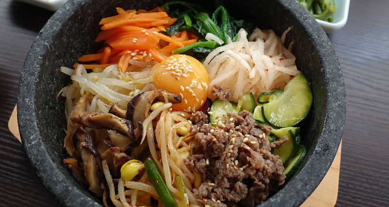

Bibimbap Recipes

Description:
A colorful and healthy Korean dish made of warm rice, assorted vegetables,
protein (usually beef or egg), and gochujang (Korean chili paste), all mixed together right before eating.
Ingredients:
- 2 bowls of cooked white rice (short- or medium-grain is best)
- 200g (7 oz) ground or sliced beef (ribeye or sirloin)
- Carrot, zucchini
- 2 eggs
- 1 cup spinach
- Some kimchi
- 1 cup of bean sprouts
- 2 tbsp gochujang
- 1 tsp sesame oil
- 1 tsp rice vinegar or water and some minced garlic
Steps:
- Cook and prep the vegetables
- Cook the beef with soy sauce, sugar, sesame oil, garlic and pepper
- Mix all the sauce ingredients in a small bowl
- Fry eggs sunny side up so the yolk stays runny
- Add every thing together and mix thoroughly so the sauce coats all the ingredients
Home